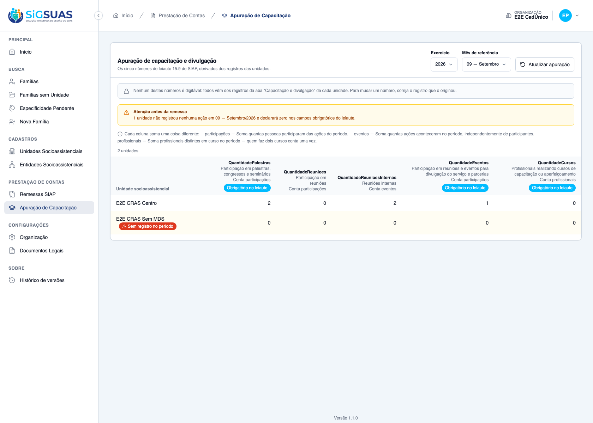

Relatório de Critérios de Aceite — US-CAPAC-03
Resumo
Doze critérios. Seis com evidência no navegador (página “Apuração de Capacitação”, em /app/prestacao-contas/capacitacao) gravada pelos 4 casos de tests/client/capacitation-tallies.spec.ts, todos aprovados — CA01, CA02, CA03, CA07, CA09 e CA10 (este parcialmente) — somados a um caso extra que prova a ausência de escrita (RN03/D09). Os outros seis (CA04, CA05, CA06, CA08, CA11 e CA12) são aritmética de backend ou exigem perfil/município que a massa da stack não tem, e ficam exclusivamente com a evidência automatizada do anexo (26 testes Pest, 114 asserções, todos verdes). Nenhum critério ficou sem evidência.
| CA | Critério | Status |
|---|---|---|
| CA01 | Apuração de uma unidade em um mês (happy path) | ATENDIDO · navegador + automatizado |
| CA02 | Forma de contagem visível | ATENDIDO · navegador + automatizado |
| CA03 | Contagem por evento independe de participantes | ATENDIDO · navegador + automatizado |
| CA04 | Curso conta nos meses em andamento | ATENDIDO · automatizado |
| CA05 | Curso sem data de fim | ATENDIDO · automatizado |
| CA06 | Profissional em dois cursos conta uma vez | ATENDIDO · automatizado |
| CA07 | Ação cancelada não conta | ATENDIDO · navegador + automatizado |
| CA08 | Retroativo conta no mês da ação | ATENDIDO · automatizado |
| CA09 | Unidade sem registro é sinalizada | ATENDIDO · navegador + automatizado |
| CA10 | Operacional vê apenas as suas unidades | ATENDIDO · navegador + automatizado |
| CA11 | Master vê todas as unidades | ATENDIDO · automatizado |
| CA12 | Isolamento entre municípios | ATENDIDO · automatizado |
CA01 — Apuração de uma unidade em um mês (happy path) ATENDIDO · navegador + automatizado
Critério (Gherkin): Dado que em agosto/2026 o "CRAS Centro" teve um seminário (tipo 001) com 3 participantes, duas reuniões internas (tipo 003) e um evento de divulgação (tipo 004) com 2 participantes Quando eu chamar GET /api/client/capacitation-tallies?exercise=2026&month=8&social_unit_uuid={cras-centro} Então QuantidadePalestras = 3, QuantidadeReunioesInternas = 2 e QuantidadeEventos = 2 E nenhum campo do payload é aceito em rota de escrita (não existe POST/PUT para o recurso)
Como foi testado: O caso lê primeiro o baseline dos contadores pela API do tenant (a base é acumulada; o que se prova é o delta), registra a massa no E2E CRAS Centro na data de hoje — um seminário (tipo 001) com 2 participantes, duas reuniões internas (tipo 003) sem ninguém e um evento de divulgação (tipo 004) com 1 participante — e então recarrega a apuração pelo botão “Atualizar apuração”, lendo os números na tela. A segunda metade do Gherkin (“nenhum campo é aceito em rota de escrita”) tem evidência própria: o print RN03/D09, do caso que instrumenta todas as requisições da página.
- Delta observado na tela: QuantidadePalestras +2 (as pessoas do seminário), QuantidadeReunioesInternas +2 (os dois eventos, com zero participantes), QuantidadeEventos +1.
- QuantidadeReunioes e QuantidadeCursos não se moveram (+0): a apuração não mistura os campos do leiaute.
- As cinco colunas aparecem na ordem do XML (sort_order).
- A página não dispara nenhuma requisição POST/PUT/PATCH/DELETE — verificado por instrumentação, não por inspeção visual (caso RN03/D09).
- Pest: “apura participacoes, eventos e cursos de uma unidade no mes (CA01)” e “nao expoe nenhuma rota de escrita para o recurso (RN03/D09)”.

CA02 — Forma de contagem visível ATENDIDO · navegador + automatizado
Critério (Gherkin): Dado que estou consultando a apuração Quando eu olhar cada contador Então ele traz counting_mode ("participation", "event" ou "professional") e o label do tipo
Como foi testado: No mesmo caso: conferir, coluna a coluna, o rótulo do tipo e a forma de contagem exibida no cabeçalho, e a legenda que explica as três formas.
- QuantidadePalestras, QuantidadeReunioes e QuantidadeEventos exibem “Conta participações”; QuantidadeReunioesInternas exibe “Conta eventos”; QuantidadeCursos exibe “Conta profissionais”.
- Cada coluna traz também o nome do tipo e o selo “Obrigatório no leiaute” quando é o caso.
- A legenda explica as três formas — sem ela, “2” em palestras (duas pessoas) e “2” em reuniões internas (duas reuniões) seriam indistinguíveis na conferência antes da remessa.
- Pest: “devolve sempre os cinco contadores, na ordem do leiaute e com a forma de contagem”.

CA03 — Contagem por evento independe de participantes ATENDIDO · navegador + automatizado
Critério (Gherkin): Dado que uma reunião interna foi registrada com 5 participantes e outra sem participantes Quando eu consultar a apuração Então QuantidadeReunioesInternas = 2
Como foi testado: Coberto pelo mesmo caso do CA01 — e é por isso que ele registra duas reuniões internas sem participante nenhum: o print é o mesmo instante, referenciado aqui porque a asserção existe. (O critério não é citado no título do caso, então não há arquivo com prefixo ca03-; a imagem abaixo é a do CA01.)
- Duas reuniões internas sem participante nenhum elevam QuantidadeReunioesInternas em 2 — o contador soma eventos, não pessoas.
- Pest: “conta reuniao interna por EVENTO, ignorando quantos participaram (CA03)”.
CA04 — Curso conta nos meses em andamento ATENDIDO · automatizado
Critério (Gherkin): Dado um curso de 10/06/2026 a 30/09/2026 com a profissional Ana Quando eu consultar a apuração de agosto/2026 Então Ana está contada em QuantidadeCursos E o mesmo vale para junho, julho e setembro de 2026 E não vale para maio nem outubro
Como foi testado: Sem print. O critério atravessa cinco meses (maio a outubro/2026) e a tela mostra um mês por consulta; provar “conta em junho, julho, agosto e setembro e não conta em maio nem outubro” exigiria massa histórica e seis navegações, com a asserção real acontecendo fora da tela. Verificado no Pest: CapacitationTallyServiceTest → “conta o curso em TODOS os meses em que esteve em andamento (CA04)”.
- Curso de 10/06/2026 a 30/09/2026 conta a profissional em QuantidadeCursos de junho a setembro.
- Não conta em maio nem em outubro.
Evidência por cobertura automatizada — ver Anexo.
CA05 — Curso sem data de fim ATENDIDO · automatizado
Critério (Gherkin): Dado um curso iniciado em 10/06/2026 sem ended_on Quando eu consultar a apuração de agosto/2026 e a de qualquer mês posterior Então o profissional continua contado enquanto ended_on for nulo
Como foi testado: Sem print (mesmo motivo do CA04: o critério é sobre meses futuros sucessivos). Verificado no Pest: “conta o curso sem data de fim do inicio em diante (CA05)”.
- Enquanto ended_on for nulo, o profissional segue contado em QuantidadeCursos do mês de início em diante.
Evidência por cobertura automatizada — ver Anexo.
CA06 — Profissional em dois cursos conta uma vez ATENDIDO · automatizado
Critério (Gherkin): Dado que Ana está em dois cursos simultâneos em agosto/2026 Quando eu consultar a apuração Então QuantidadeCursos a conta uma única vez
Como foi testado: Sem print. A distinção “um profissional em dois cursos” não é observável na célula (o número seria 1 nos dois casos); a prova é a comparação com o cenário de dois profissionais, que só o teste unitário faz. Pest: “conta uma vez a profissional que esta em dois cursos simultaneos (CA06)”.
- Dois cursos simultâneos da mesma profissional em agosto/2026 resultam em QuantidadeCursos = 1 para ela.
Evidência por cobertura automatizada — ver Anexo.
CA07 — Ação cancelada não conta ATENDIDO · navegador + automatizado
Critério (Gherkin): Dado que o seminário com 3 participantes foi cancelado Quando eu consultar a apuração novamente Então QuantidadePalestras deixa de somar esses 3 E a ação continua visível na listagem da unidade, marcada como cancelada
Como foi testado: O caso lê o valor na tela (baseline), cria uma reunião interna (contagem por evento, para que a única causa possível de variação seja a ação em si), recarrega e confere baseline + 1; cancela com motivo, recarrega e confere que voltou ao baseline. Ao final, consulta a ação pela API para provar que ela não sumiu.
- Depois do registro, o contador exibido sobe exatamente 1.
- Depois do cancelamento com motivo, o contador exibido volta ao valor anterior — a ação cancelada deixou de somar.
- A ação continua existindo com status "cancelled": some da apuração, não da história (RN09).
- Pest: “nao conta acao cancelada, e a unidade fica sem registro no periodo”.
CA08 — Retroativo conta no mês da ação ATENDIDO · automatizado
Critério (Gherkin): Dado que em 20/08/2026 foi registrada uma ação ocorrida em 22/07/2026 Quando eu consultar a apuração de julho/2026 Então a ação está contada em julho E não aparece na apuração de agosto/2026
Como foi testado: Sem print. O caso de navegador trabalha no mês corrente de propósito (é o período padrão da tela); provar “conta em julho e não em agosto” exige duas consultas sobre massa retroativa. Verificado no Pest: “conta a acao retroativa no mes em que ela OCORREU, nao no do lancamento (CA08)”.
- Ação lançada em 20/08 e ocorrida em 22/07 é contada na apuração de julho/2026.
- Ela não aparece na apuração de agosto/2026.
Evidência por cobertura automatizada — ver Anexo.
CA09 — Unidade sem registro é sinalizada ATENDIDO · navegador + automatizado
Critério (Gherkin): Dado que o "CRAS Rural" não registrou nenhuma ação em agosto/2026 Quando eu consultar a apuração do período Então a unidade aparece com os cinco contadores em 0 E has_no_records = true E o payload indica quais desses campos são obrigatórios no leiaute (is_required_in_layout)
Como foi testado: A unidade E2E CRAS Sem MDS é reservada a este critério — nenhum spec registra ação nela. O caso confirma pela API que ela está sem registro no período e então assevera o que a tela mostra.
- A faixa “Atenção antes da remessa — 1 unidade não registrou nenhuma ação em 09 — Setembro/2026 e declarará zero nos campos obrigatórios do leiaute” aparece acima da matriz.
- A linha da unidade vem marcada (data-no-records="true") com o selo “Sem registro no período”.
- Os cinco contadores da unidade exibem 0, e o cabeçalho identifica quais campos são obrigatórios no leiaute.
- Pest: “sinaliza a unidade sem nenhum registro com os cinco contadores zerados” e “distingue 'nao registrou nada' de 'registrou algo que conta zero'”.

CA10 — Operacional vê apenas as suas unidades ATENDIDO · navegador + automatizado
Critério (Gherkin): Dado que sou Operacional lotado apenas no "CRAS Centro" Quando eu consultar a apuração sem filtro de unidade Então recebo somente o "CRAS Centro" E, ao filtrar por uma unidade fora da minha lotação, recebo 404
Como foi testado: Metade na tela, metade no Pest — e o dossiê separa as duas. Todos os casos do navegador rodam como Operacional, e a apuração sem filtro de unidade mostra exatamente as duas unidades da lotação dele (“2 unidades”: E2E CRAS Centro e E2E CRAS Sem MDS), embora o município tenha três. A segunda metade — 404 ao filtrar por unidade fora da lotação — não tem print: é status HTTP, verificado no Pest (“devolve 404 ao Operacional que filtra unidade fora da sua lotacao”).
- Na tela, sem filtro, aparecem apenas as unidades de lotação vigente do operador (2 de 3 do município) — o E2E CREAS não é listado.
- Pest: 404 ao filtrar unidade fora da lotação; 200 com lista vazia para operador sem lotação nenhuma.
CA11 — Master vê todas as unidades ATENDIDO · automatizado
Critério (Gherkin): Dado que sou Master do município Quando eu consultar a apuração sem filtro de unidade Então recebo todas as unidades socioassistenciais do tenant, cada uma com seus cinco contadores
Como foi testado: Sem print. A sessão do harness de e2e é a do Operacional; abrir uma segunda sessão de Master só para o print exigiria refazer o login dentro do caso, o que esbarra no throttle:6,1 da rota de login do client. Verificado no Pest: “devolve ao Master todas as unidades do municipio, ordenadas por nome”.
- O Master recebe todas as unidades socioassistenciais do tenant, cada uma com os cinco contadores.
Evidência por cobertura automatizada — ver Anexo.
CA12 — Isolamento entre municípios ATENDIDO · automatizado
Critério (Gherkin): Dado que sou usuário do município A Quando eu consultar a apuração (com ou sem filtro de unidade do município B) Então vejo apenas unidades do município A; a unidade de B responde 404
Como foi testado: Sem print, por impossibilidade de massa (a stack de evidências tem um único tenant). Verificado em Tests\Feature\TenantIsolation\CapacitationTallyIsolationTest, 3 casos no anexo.
- 404 quando o Master de A filtra a apuração por unidade de B.
- A apuração de A não soma ações de B.
- A unidade de B não vaza nem quando o usuário é Master dos dois municípios.
Evidência por cobertura automatizada — ver Anexo.
Observações e ressalvas
Como estas evidências foram produzidas (e por que isso importa)
Nenhum print foi tirado à mão. Cada imagem deste dossiê foi gravada pelo mesmo caso Playwright que verifica o critério, executado com CAPTURE_EVIDENCE=1 (e2e/helpers/evidence.ts): a foto só é salva quando o caso passa. Se uma asserção cai, não existe imagem — logo, a presença do arquivo é ela própria parte da prova. Sem essa variável de ambiente a suíte roda exatamente como antes, sem gravar nada.
Quando um caso cobre mais de um critério, o mesmo instante é salvo com um nome por critério (ex.: ca02-…, ca03-… e ca04-… são a mesma tela).
A apuração é página própria, não aba da unidade
A spec técnica supunha uma aba dentro da unidade; a implementação a colocou em /app/prestacao-contas/capacitação — página própria, com a unidade como filtro opcional. Faz sentido: a consulta padrão é a do município inteiro, o inverso da US-CAPAC-02, onde a unidade é dona do registro. Divergência de forma, não de conteúdo: todos os CAs continuam verificáveis.
RN03/D09 — a ausência de escrita é evidência instrumentada
Um caso extra (print rn03-… / d09-…) prova o que nenhuma inspeção visual provaria: além de não haver campo digitável nem botão de salvar na matriz, nenhuma requisição POST/PUT/PATCH/DELETE parte da página — todas as requisições foram interceptadas e a lista ficou vazia. A tela também diz o motivo, em vez de apenas não oferecer: “Nenhum destes números é digitável: todos vêm dos registros da aba Capacitação e divulgação de cada unidade.”
Onde o anexo automatizado foi executado
O anexo Pest foi rodado no host, em api/, com DB_CONNECTION=sqlite DB_DATABASE=:memory:. Rodar a mesma suíte dentro do contêiner da stack E2E não é seguro: as variáveis de ambiente do contêiner vencem os <env> do phpunit.xml, e o RefreshDatabase recria o banco esuas_e2e — isto é, apaga a massa da própria stack de evidências.
Anexo — Cobertura automatizada (Pest, --filter='CapacitationTally') — 26 testes, 114 asserções
$ cd api && DB_CONNECTION=sqlite DB_DATABASE=:memory: php -d memory_limit=1G vendor/bin/pest --colors=never --filter='CapacitationTally' PASS Tests\Unit\Services\Capacitation\CapacitationTallyServiceTest ✓ it apura participacoes, eventos e cursos de uma unidade no mes (CA01) 0.33s ✓ it devolve sempre os cinco contadores, na ordem do leiaute e com a forma de contagem (CA02/RN11) 0.02s ✓ it conta reuniao interna por EVENTO, ignorando quantos participaram (CA03) 0.02s ✓ it conta o curso em TODOS os meses em que esteve em andamento (CA04) 0.02s ✓ it conta o curso sem data de fim do inicio em diante (CA05) 0.02s ✓ it conta uma vez a profissional que esta em dois cursos simultaneos (CA06) 0.02s ✓ it nao conta acao cancelada, e a unidade fica sem registro no periodo (CA07/RN06) 0.02s ✓ it conta a acao retroativa no mes em que ela OCORREU, nao no do lancamento (CA08) 0.02s ✓ it devolve contador de tipo INATIVADO, porque o campo e do leiaute e nao do cadastro (D03) 0.02s ✓ it sinaliza has_no_records apenas quando NAO existe registro algum no periodo (RN08) 0.02s ✓ it ordena as unidades por nome e ignora id inexistente (RN11) 0.03s ✓ it nao mistura as acoes de outra unidade nem de outro municipio 0.03s ✓ it recusa mes fora de 1–12 (D08) 0.01s PASS Tests\Feature\Client\CapacitationTallyTest ✓ it devolve os cinco contadores com a forma de contagem e o rotulo do tipo (CA02) 0.05s ✓ it sinaliza a unidade sem nenhum registro com os cinco contadores zerados (CA09) 0.03s ✓ it distingue "nao registrou nada" de "registrou algo que conta zero" (CA09/RN08) 0.03s ✓ it devolve ao Operacional apenas as unidades de lotacao vigente (CA10) 0.03s ✓ it devolve 404 ao Operacional que filtra unidade fora da sua lotacao (CA10) 0.02s ✓ it devolve 200 com lista vazia ao Operacional sem lotacao nenhuma (CA10/RN09) 0.02s ✓ it devolve ao Master todas as unidades do municipio, ordenadas por nome (CA11/RN11) 0.03s ✓ it nao expoe nenhuma rota de escrita para o recurso (RN03/D09) 0.03s ✓ it recusa mes fora de 1-12 e exercicio fora de faixa (D08/§10) 0.03s ✓ it exige a permissao capacitation-tallies.index 0.03s PASS Tests\Feature\TenantIsolation\CapacitationTallyIsolationTest ✓ it devolve 404 quando o Master de A filtra a apuracao por unidade de B (CA12/RN10) 0.03s ✓ it apura apenas unidades do proprio municipio, sem somar acoes de B (CA12) 0.03s ✓ it nao vaza a unidade de B nem quando o Master de A e Master tambem em B 0.03s Tests: 26 passed (114 assertions) Duration: 1.27s